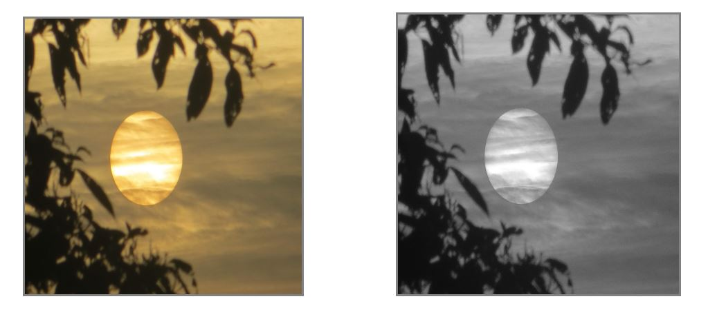

Image Greyscale
Image Greyscale is a web based application that uses simple javascript to change the colorful image to simple black and white. This web application is made using HTML, CSS and Javascript. An user uploads image to the browser and original image with the grayscale image is shown in the browser
A simple depiction of how the image changes after you upload your original image is shown below. The first picture is the original picture you upload and the second one is the picture changed into grayscale.

Click here to try this on your image.